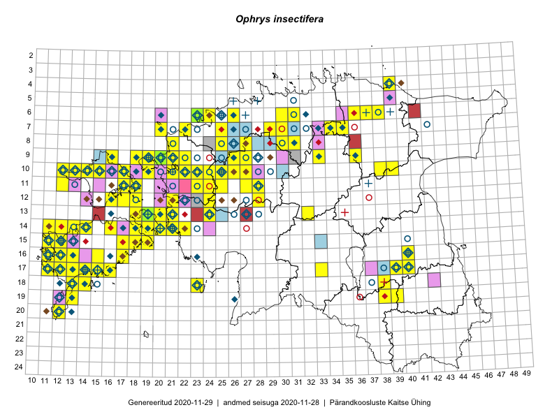

Ophrys insectifera
Uuendatud: 2016-12-07
Kaardile koondatud taksonid: Ophrys insectifera L.

Kaart põhineb 174 vaatlusel. Taime on leitud 60 ruudust.
| Ruut | Vaatleja(d) | Vaatlusaeg | Kirje tüüp | Viide andmebaasikirjele |
|---|---|---|---|---|
| 12-28 | Tiit Hallikma, Toomas Kukk, Indrek Tammekänd | 2015-06-09 | ruut/ala | vaata PlutoFis |
| 17-14 | Toomas Kukk, Peedu Saar | 2015-08-05 | punkt | vaata PlutoFis |
| 17-14 | Toomas Kukk, Peedu Saar, Kersti Tambets, Sten Mander, Janika Sammasto | 2015-08-05 | ruut/ala | vaata PlutoFis |
| 12-28 | Tiit Hallikma, Indrek Tammekänd, Toomas Kukk | 2015-06-09 | punkt | vaata PlutoFis |
| 17-40 | Peedu Saar, Thea Kull | 2015-06-19 | punkt | vaata PlutoFis |
| 19-13 | Toomas Kukk | 2014-06-18 | ruut/ala | vaata PlutoFis |
| 18-14 | Toomas Kukk | 2014-06-18 | ruut/ala | vaata PlutoFis |
| 18-14 | Toomas Kukk | 2014-06-18 | punkt | vaata PlutoFis |
| 18-14 | Toomas Kukk | 2014-06-18 | punkt | vaata PlutoFis |
| 18-13 | Toomas Kukk | 2014-06-19 | punkt | vaata PlutoFis |
| 10-15 | Thea Kull | 2015-06-15 | punkt | vaata PlutoFis |
| 10-15 | Thea Kull | 2015-06-15 | punkt | vaata PlutoFis |
| 10-15 | Thea Kull | 2015-06-15 | ruut/ala | vaata PlutoFis |
| 10-13 | Thea Kull | 2015-06-14 | ruut/ala | vaata PlutoFis |
| 14-16 | Ott Luuk, Elle Roosaluste, Jaak-Albert Metsoja | 2015-06-15 | ruut/ala | vaata PlutoFis |
| 16-17 | Meeli Mesipuu, Kadri Tali | 2015-07-06 | ruut/ala | vaata PlutoFis |
| 10-13 | Thea Kull | 2016-06-14 | punkt | vaata PlutoFis |
| 17-40 | Thea Kull, Peedu Saar | 2015-06-19 | ruut/ala | vaata PlutoFis |
| 07-34 | Jana-Maria Habicht, Ester Valdvee | 2015-07-20 | ruut/ala | vaata PlutoFis |
| 14-16 | Ott Luuk, Elle Roosaluste, Jaak-Albert Metsoja | 2015-06-15 | punkt | vaata PlutoFis |
| 09-36 | Jana-Maria Habicht, Ester Valdvee, Tiiu Liimets | 2015-07-07 | ruut/ala | vaata PlutoFis |
| 09-36 | Jana-Maria Habicht, Ester Valdvee, Tiiu Liimets | 2015-07-07 | ruut/ala | vaata PlutoFis |
| 10-12 | Eeva-Maria Jeletsky, Tarmo Niitla | 2015-06-26 | punkt | vaata PlutoFis |
| 11-12 | Eeva-Maria Jeletsky, Tarmo Niitla | 2015-06-27 | punkt | vaata PlutoFis |
| 10-12 | Eeva-Maria Jeletsky, Tarmo Niitla | 2015-06-26 | ruut/ala | vaata PlutoFis |
| 11-12 | Eeva-Maria Jeletsky, Tarmo Niitla | 2015-06-27 | ruut/ala | vaata PlutoFis |
| 11-17 | Eeva-Maria Jeletsky, Tarmo Niitla | 2015-06-17 | punkt | vaata PlutoFis |
| 11-17 | Eeva-Maria Jeletsky, Tarmo Niitla | 2015-06-17 | punkt | vaata PlutoFis |
| 11-17 | Eeva-Maria Jeletsky, Tarmo Niitla | 2015-06-17 | punkt | vaata PlutoFis |
| 11-17 | Eeva-Maria Jeletsky, Tarmo Niitla | 2015-06-17 | punkt | vaata PlutoFis |
| 11-17 | Eeva-Maria Jeletsky, Tarmo Niitla | 2015-06-17 | ruut/ala | vaata PlutoFis |
| 11-18 | Eeva-Maria Jeletsky, Tarmo Niitla | 2015-06-17 | punkt | vaata PlutoFis |
| 11-18 | Eeva-Maria Jeletsky, Tarmo Niitla | 2015-06-17 | punkt | vaata PlutoFis |
| 11-18 | Eeva-Maria Jeletsky, Tarmo Niitla | 2015-06-17 | punkt | vaata PlutoFis |
| 12-17 | Eeva-Maria Jeletsky, Tarmo Niitla | 2015-06-21 | punkt | vaata PlutoFis |
| 12-17 | Eeva-Maria Jeletsky, Tarmo Niitla | 2015-06-21 | punkt | vaata PlutoFis |
| 12-17 | Eeva-Maria Jeletsky, Tarmo Niitla | 2015-06-21 | punkt | vaata PlutoFis |
| 12-17 | Eeva-Maria Jeletsky, Tarmo Niitla | 2015-06-21 | punkt | vaata PlutoFis |
| 11-18 | Eeva-Maria Jeletsky, Tarmo Niitla | 2015-06-17 | ruut/ala | vaata PlutoFis |
| 12-17 | Eeva-Maria Jeletsky, Tarmo Niitla | 2015-06-21 | ruut/ala | vaata PlutoFis |
| 09-36 | Jana-Maria Habicht, Ester Valdvee, Tiiu Liimets | 2015-07-07 | punkt | vaata PlutoFis |
| 09-36 | Jana-Maria Habicht, Ester Valdvee, Tiiu Liimets | 2015-07-07 | punkt | vaata PlutoFis |
| 15-11 | Triin Reitalu, Mari Reitalu | 2015-06-29 | ruut/ala | vaata PlutoFis |
| 15-11 | Triin Reitalu, Mari Reitalu | 2015-06-29 | punkt | vaata PlutoFis |
| 16-11 | Mari Reitalu | 2015-05-22 | ruut/ala | vaata PlutoFis |
| 16-11 | Mari Reitalu | 2015-06-22 | punkt | vaata PlutoFis |
| 07-34 | Jana-Maria Habicht, Ester Valdvee | 2015-07-20 | punkt | vaata PlutoFis |
| 13-21 | Rein Kalamees, Kersti Püssa | 2015-06-28 | ruut/ala | vaata PlutoFis |
| 17-12 | Mari Reitalu | 2014-08-31 | ruut/ala | vaata PlutoFis |
| 17-33 | Maria Abakumova, Helle Mäemets | 2015-07-03 | ruut/ala | vaata PlutoFis |
| 17-12 | Mari Reitalu | 2015-06-19 | ruut/ala | vaata PlutoFis |
| 17-12 | Mari Reitalu | 2015-06-19 | punkt | vaata PlutoFis |
| 17-12 | Mari Reitalu | 2015-07-02 | ruut/ala | vaata PlutoFis |
| 17-12 | Mari Reitalu | 2015-07-02 | punkt | vaata PlutoFis |
| 16-12 | Mari Reitalu | 2015-08-23 | ruut/ala | vaata PlutoFis |
| 16-12 | Mari Reitalu | 2015-08-23 | punkt | vaata PlutoFis |
| 14-20 | Meeli Mesipuu, Kadri Tali | 2015-06-26 | ruut/ala | vaata PlutoFis |
| 14-20 | Meeli Mesipuu, Kadri Tali | 2015-06-26 | punkt | vaata PlutoFis |
| 14-20 | Meeli Mesipuu, Kadri Tali | 2015-06-26 | punkt | vaata PlutoFis |
| 13-19 | Meeli Mesipuu, Kadri Tali | 2015-06-24 | ruut/ala | vaata PlutoFis |
| 14-11 | Mari Reitalu, Oliver Parrest | 2015-07-14 | ruut/ala | vaata PlutoFis |
| 17-13 | Mari Reitalu, Oliver Parrest | 2015-08-12 | ruut/ala | vaata PlutoFis |
| 14-13 | Mari Reitalu, Oliver Parrest | 2015-07-24 | ruut/ala | vaata PlutoFis |
| 13-18 | Meeli Mesipuu, Kadri Tali | 2015-06-25 | ruut/ala | vaata PlutoFis |
| 16-13 | Mari Reitalu, Oliver Parrest | 2015-07-27 | ruut/ala | vaata PlutoFis |
| 13-18 | Meeli Mesipuu, Kadri Tali | 2015-06-26 | punkt | vaata PlutoFis |
| 13-18 | Meeli Mesipuu, Kadri Tali | 2015-06-26 | punkt | vaata PlutoFis |
| 13-18 | Meeli Mesipuu, Kadri Tali | 2015-06-26 | punkt | vaata PlutoFis |
| 14-12 | Mari Reitalu, Oliver Parrest | 2015-07-21 | ruut/ala | vaata PlutoFis |
| 17-33 | Maria Abakumova, Helle Mäemets | 2015-07-03 | punkt | vaata PlutoFis |
| 15-11 | Mari Reitalu, Oliver Parrest | 2015-07-16 | ruut/ala | vaata PlutoFis |
| 18-13 | Mari Reitalu | 2014-06-14 | ruut/ala | vaata PlutoFis |
| 17-11 | Mari Reitalu, Triin Reitalu | 2015-05-19 | ruut/ala | vaata PlutoFis |
| 17-11 | Mari Reitalu, Triin Reitalu | 2015-08-05 | ruut/ala | vaata PlutoFis |
| 17-11 | Mari Reitalu, Triin Reitalu | 2015-06-24 | ruut/ala | vaata PlutoFis |
| 16-12 | Mari Reitalu | 2015-07-08 | ruut/ala | vaata PlutoFis |
| 16-13 | Sirje Azarov, Aira Alasi | 2015-07-20 | ruut/ala | vaata PlutoFis |
| 16-13 | Sirje Azarov, Aira Alasi | 2015-07-20 | punkt | vaata PlutoFis |
| 16-13 | Sirje Azarov, Aira Alasi | 2015-07-20 | punkt | vaata PlutoFis |
| 14-18 | Karin Kikas, Elle Rajandu | 2015-07-21 | ruut/ala | vaata PlutoFis |
| 12-16 | Meeli Mesipuu, Timo Luhamäe | 2015-05-28 | ruut/ala | vaata PlutoFis |
| 14-12 | Mari Reitalu, Oliver Parrest | 2015-07-21 | punkt | vaata PlutoFis |
| 17-16 | Sirje Azarov, Aira Alasi | 2015-08-17 | ruut/ala | vaata PlutoFis |
| 14-13 | Mari Reitalu, Oliver Parrest | 2015-07-24 | punkt | vaata PlutoFis |
| 17-16 | Sirje Azarov, Aira Alasi | 2015-08-17 | punkt | vaata PlutoFis |
| 16-13 | Mari Reitalu, Oliver Parrest | 2015-07-27 | punkt | vaata PlutoFis |
| 16-13 | Mari Reitalu, Oliver Parrest | 2015-07-27 | punkt | vaata PlutoFis |
| 15-18 | Karin Kikas, Elle Rajandu | 2015-07-24 | ruut/ala | vaata PlutoFis |
| 14-11 | Mari Reitalu, Oliver Parrest | 2015-07-14 | punkt | vaata PlutoFis |
| 17-15 | Karin Kikas, Elle Rajandu | 2015-07-22 | punkt | vaata PlutoFis |
| 17-14 | Elle Rajandu, Karin Kikas | 2015-07-22 | punkt | vaata PlutoFis |
| 15-18 | Elle Rajandu, Karin Kikas | 2015-07-24 | punkt | vaata PlutoFis |
| 06-23 | Mari Metsoja, Jaak-Albert Metsoja, Ott Luuk | 2015-06-04 | ruut/ala | vaata PlutoFis |
| 06-23 | Jaak-Albert Metsoja, Mari Metsoja, Ott Luuk | 2015-06-05 | ruut/ala | vaata PlutoFis |
| 14-18 | Karin Kikas, Elle Rajandu | 2015-07-21 | punkt | vaata PlutoFis |
| 14-18 | Karin Kikas, Elle Rajandu | 2015-07-21 | punkt | vaata PlutoFis |
| 13-20 | Kadri Tali | 2015-05-08 | ruut/ala | vaata PlutoFis |
| 13-19 | Kadri Tali | 2015-10-05 | ruut/ala | vaata PlutoFis |
| 13-20 | Kadri Tali | 2015-06-05 | ruut/ala | vaata PlutoFis |
| 13-18 | Hannes Pehlak | 2015-06-16 | ruut/ala | vaata PlutoFis |
| 16-12 | Triin Reitalu, Mari Reitalu | 2015-07-08 | punkt | vaata PlutoFis |
| 17-11 | Triin Reitalu, Mari Reitalu | 2015-08-05 | punkt | vaata PlutoFis |
| 17-11 | Triin Reitalu, Mari Reitalu | 2015-05-20 | punkt | vaata PlutoFis |
| 17-11 | Triin Reitalu, Mari Reitalu | 2015-06-24 | punkt | vaata PlutoFis |
| 17-11 | Peedu Saar, Toomas Kukk, Ott Luuk, Thea Kull, Mari Reitalu | 2014-06-28 | ruut/ala | vaata PlutoFis |
| 16-40 | Maret Gerz, Ott Luuk | 2014-06-25 | ruut/ala | vaata PlutoFis |
| 13-21 | Ott Luuk, Maret Gerz | 2014-07-03 | ruut/ala | vaata PlutoFis |
| 10-27 | Peedu Saar, Ott Luuk, Meeli Mesipuu, Thea Kull, Kersti Püssa, Rein Kalamees, Toomas Kukk | 2014-06-10 | ruut/ala | vaata PlutoFis |
| 13-24 | Marek Sammul, Ott Luuk | 2014-06-21 | ruut/ala | vaata PlutoFis |
| 15-11 | Oliver Parrest, Mari Reitalu | 2015-07-16 | punkt | vaata PlutoFis |
| 10-27 | Aat Sarv | 2015-07-02 | ruut/ala | vaata PlutoFis |
| 19-39 | Peedu Saar, Tarmo Niitla | 2016-06-13 | punkt | vaata PlutoFis |
| 16-15 | Meeli Mesipuu | 2016-06-28 | ruut/ala | vaata PlutoFis |
| 06-24 | Thea Kull, Helle Mäemets | 2016-07-07 | ruut/ala | vaata PlutoFis |
| 09-27 | Liina Oja, Rein Kalamees | 2016-07-06 | punkt | vaata PlutoFis |
| 06-24 | Thea Kull, Helle Mäemets | 2016-07-07 | punkt | vaata PlutoFis |
| 10-17 | Eeva-Maria Jeletsky, Tarmo Niitla | 2016-07-14 | punkt | vaata PlutoFis |
| 10-17 | Eeva-Maria Jeletsky, Tarmo Niitla | 2016-07-14 | ruut/ala | vaata PlutoFis |
| Ulvi Selgis | 2016-07-27 | ruut/ala | vaata PlutoFis | |
| 20-12 | Ulvi Selgis | 2016-06-27 | punkt | vaata PlutoFis |
| 06-26 | Ulvi Selgis | 2016-07-16 | punkt | vaata PlutoFis |
| 13-19 | Ulvi Selgis | 2016-06-26 | punkt | vaata PlutoFis |
| 14-21 | Erkki Otsman, Sergei Smirnov | 2016-06-24 | ruut/ala | vaata PlutoFis |
| 13-32 | Thea Kull, Raivo Kalle, Susanna Vain | 2016-07-21 | ruut/ala | vaata PlutoFis |
| 19-39 | Tarmo Niitla, Peedu Saar | 2016-06-13 | punkt | vaata PlutoFis |
| 13-32 | Susanna Vain, Thea Kull, Raivo Kalle | 2016-07-21 | punkt | vaata PlutoFis |
| 10-26 | Sirje Azarov, Meeli Mesipuu | 2016-07-06 | punkt | vaata PlutoFis |
| 10-22 | Sirje Azarov, Oliver Parrest | 2016-07-07 | ruut/ala | vaata PlutoFis |
| 10-22 | Sirje Azarov, Oliver Parrest | 2016-07-07 | punkt | vaata PlutoFis |
| 14-14 | Sirje Azarov, Mari Reitalu | 2016-07-26 | punkt | vaata PlutoFis |
| 18-13 | Sirje Azarov, Mari Reitalu | 2016-07-31 | punkt | vaata PlutoFis |
| 09-20 | Timo Luhamäe, Peedu Saar | 2016-07-07 | punkt | vaata PlutoFis |
| 09-20 | Timo Luhamäe, Peedu Saar | 2016-07-07 | punkt | vaata PlutoFis |
| 07-22 | Mari Reitalu, Eerik Leibak | 2016-07-07 | ruut/ala | vaata PlutoFis |
| 14-14 | Mari Reitalu, Sirje Azarov | 2016-07-26 | ruut/ala | vaata PlutoFis |
| 14-18 | Mari Reitalu, Sirje Azarov | 2016-08-09 | ruut/ala | vaata PlutoFis |
| 18-13 | Mari Reitalu, Sirje Azarov | 2016-07-31 | ruut/ala | vaata PlutoFis |
| 07-22 | Mari Reitalu, Triin Reitalu, Sirje Azarov | 2016-07-08 | punkt | vaata PlutoFis |
| 07-22 | Mari Reitalu, Triin Reitalu, Sirje Azarov | 2016-07-10 | punkt | vaata PlutoFis |
| 08-25 | Helle Mäemets, Tiina Elvisto | 2016-07-05 | ruut/ala | vaata PlutoFis |
| 08-25 | Helle Mäemets, Tiina Elvisto | 2016-07-05 | punkt | vaata PlutoFis |
| 16-12 | Mari Reitalu | 2016-06-09 | punkt | vaata PlutoFis |
| 16-11 | Mari Reitalu, Triin Reitalu | 2016-06-02 | punkt | vaata PlutoFis |
| 14-21 | Erkki Otsman, Sergei Smirnov | 2016-06-24 | punkt | vaata PlutoFis |
| 15-12 | Mari Reitalu | 2016-06-27 | punkt | vaata PlutoFis |
| 09-20 | Peedu Saar, Timo Luhamäe | 2016-07-07 | ruut/ala | vaata PlutoFis |
| 12-16 | Timo Luhamäe, Meeli Mesipuu | 2015-05-28 | punkt | vaata PlutoFis |
| 10-26 | Meeli Mesipuu, Sirje Azarov | 2016-07-06 | ruut/ala | vaata PlutoFis |
| 16-15 | Meeli Mesipuu | 2016-06-28 | punkt | vaata PlutoFis |
| 16-15 | Meeli Mesipuu | 2016-06-28 | punkt | vaata PlutoFis |
| 16-15 | Meeli Mesipuu | 2016-06-28 | punkt | vaata PlutoFis |
| 14-21 | Toomas Kukk | 2013-06-29 | ruut/ala | vaata PlutoFis |
| 16-13 | Meeli Mesipuu, Virve Sõber | 2012-06-08 | punkt | vaata PlutoFis |
| 17-11 | Meeli Mesipuu, Virve Sõber | 2012-06-07 | punkt | vaata PlutoFis |
| 17-11 | Meeli Mesipuu, Virve Sõber | 2012-06-07 | punkt | vaata PlutoFis |
| 15-17 | Meeli Mesipuu | 2010-06-28 | punkt | vaata PlutoFis |
| 15-17 | Meeli Mesipuu | 2010-06-28 | punkt | vaata PlutoFis |
| 15-17 | Meeli Mesipuu | 2010-06-28 | punkt | vaata PlutoFis |
| 15-17 | Meeli Mesipuu | 2010-06-28 | punkt | vaata PlutoFis |
| 15-17 | Meeli Mesipuu | 2010-06-28 | punkt | vaata PlutoFis |
| 15-17 | Meeli Mesipuu | 2010-06-28 | punkt | vaata PlutoFis |
| 15-17 | Meeli Mesipuu | 2010-06-28 | punkt | vaata PlutoFis |
| 15-17 | Meeli Mesipuu | 2010-06-28 | punkt | vaata PlutoFis |
| 15-17 | Meeli Mesipuu | 2010-06-28 | punkt | vaata PlutoFis |
| 15-17 | Meeli Mesipuu | 2010-06-28 | punkt | vaata PlutoFis |
| 06-23 | Meeli Mesipuu | 2013-06-19 | punkt | vaata PlutoFis |
| 14-21 | Ott Luuk, Peedu Saar | 2016-06-29 | punkt | vaata PlutoFis |
| 07-20 | Jaak-Albert Metsoja, Mari Metsoja | 2016-07-01 | ruut/ala | vaata PlutoFis |
| 07-20 | Jaak-Albert Metsoja, Mari Metsoja | 2016-06-30 | punkt | vaata PlutoFis |
| 07-22 | Marju Erit | 2015-05-01 | ruut/ala | vaata PlutoFis |
| 06-23 | Jaak-Albert Metsoja, Mari Metsoja, Ott Luuk | 2015-06-05 | punkt | vaata PlutoFis |
| 06-23 | Jaak-Albert Metsoja, Mari Metsoja, Ott Luuk | 2015-06-05 | punkt | vaata PlutoFis |
| 06-23 | Jaak-Albert Metsoja, Mari Metsoja, Ott Luuk | 2015-06-05 | punkt | vaata PlutoFis |
| 06-23 | Jaak-Albert Metsoja, Mari Metsoja, Ott Luuk | 2015-06-04 | punkt | vaata PlutoFis |